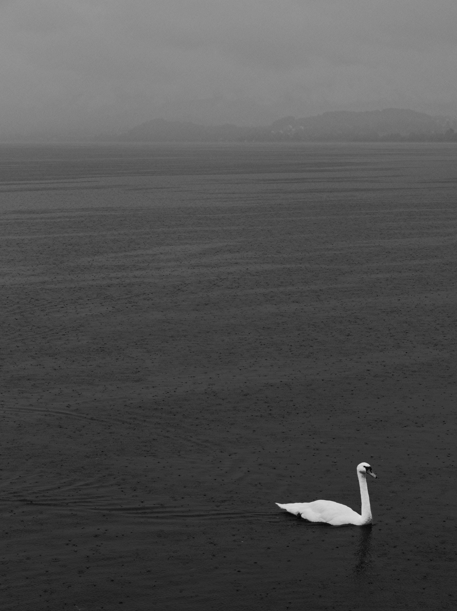

Hello, my name is Jonathan Malak, I am 18 years old and I was born in Egypt, in the city of Cairo. I was born with severe scoliosis and spina bifida, which is when the spine and spinal cord don't form properly before birth. This could leave the baby with bladder, bowel, and movement problems, which is exactly what I have. To add to what I already have, I also have scoliosis which means that the spine formed so badly that it looks either like the shape of a "C" or the shape of an "S".
Other things about me is that I love socializing, sports, and my nickname is Jonny
Yesterday is history, tomorrow is a mystery, but today is a gift. That is why it is called the present. -Master Oogway